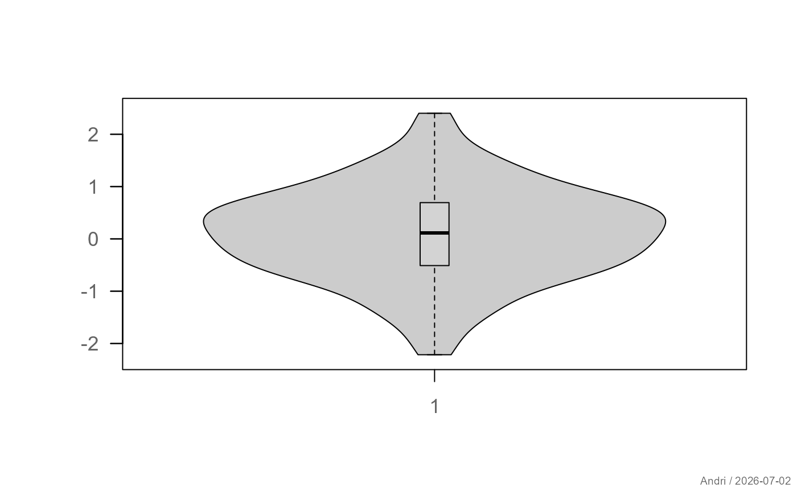
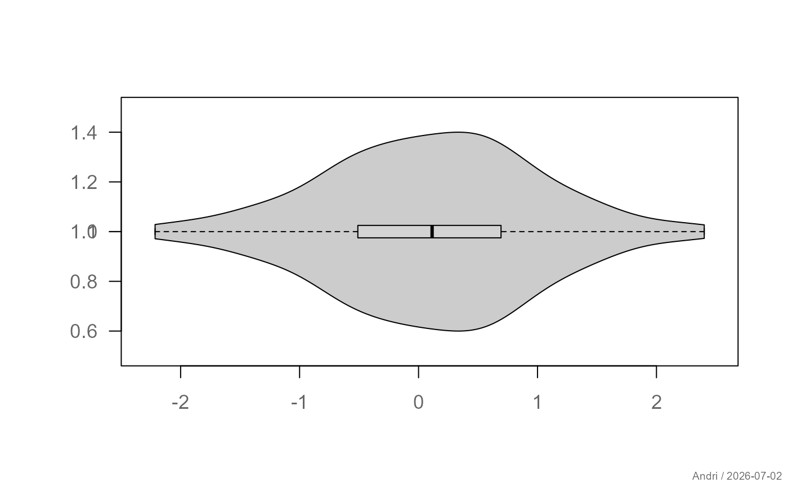
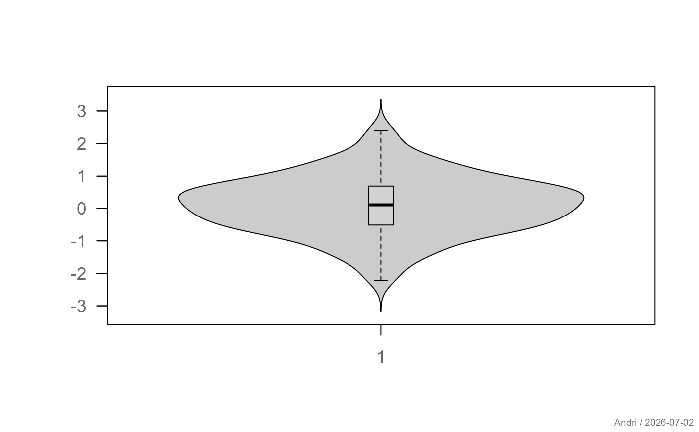
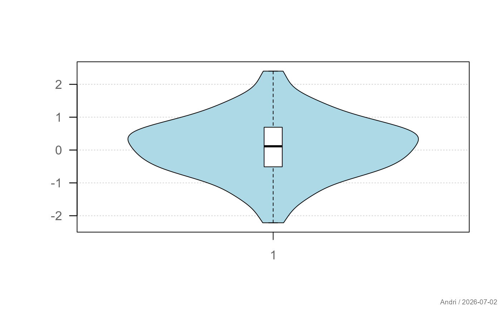
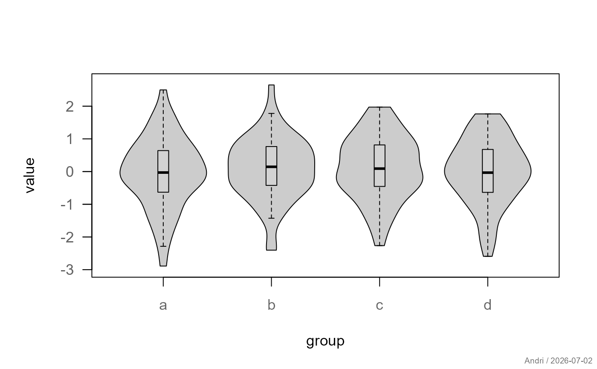

Draws violin plots for one or more groups, combining kernel density estimation with optional boxplot overlays. The function follows a boxplot-like interface and supports both default and formula methods.
Usage
plotViolin(x, ...)
# Default S3 method
plotViolin(
x,
...,
main = NULL,
xlab = "",
ylab = "",
xlim = NULL,
ylim = NULL,
horizontal = FALSE,
at = NULL,
names = NULL,
add = FALSE,
bw = "nrd0",
trim = TRUE,
col = "grey80",
border = "black",
lwd = 1,
box = TRUE,
grid = NA,
quantiles = NULL
)
# S3 method for class 'formula'
plotViolin(
formula,
data = NULL,
subset,
na.action = na.omit,
...,
main = NULL,
xlab = "",
ylab = "",
xlim = NULL,
ylim = NULL,
horizontal = FALSE,
at = NULL,
names = NULL,
add = FALSE,
bw = "nrd0",
trim = TRUE,
col = "grey80",
border = "black",
lwd = 1,
box = TRUE,
grid = NA,
quantiles = NULL
)Arguments
- x
Numeric vector, list of numeric vectors, or first group.
- ...
Additional data vectors (unnamed) or graphical parameters passed to
par().- main, xlab, ylab
Plot labels.
- xlim, ylim
Axis limits.
- horizontal
Logical; if
TRUE, draws horizontal violins.- at
Numeric positions of the groups.
- names
Optional group labels.
- add
Logical; if
TRUE, adds to an existing plot.- bw
Bandwidth specification passed to
density().- trim
Logical. If
TRUE(default), the kernel density estimate of each group is restricted to the observed data range (from = min(x),to = max(x)), so the violin never extends beyond the actual data — matching the default behavior ofggplot2::geom_violin(). IfFALSE,density()is called with its own defaults, which extend the tails up tocut * bwbeyondrange(x)and may produce violins that reach into implausible values (e.g. scores above 100 or below 0).- col
Fill color(s) of the violins.
- border
Border color(s) of the violins.
- lwd
Line width for violin borders.
- box
Logical or list controlling the boxplot overlay (see Details).
- grid
Logical,
NA, or list controlling background grid.- quantiles
Optional numeric vector of probabilities for drawing quantile lines inside each violin.
- formula
A formula of the form y ~ group.
- data
Optional data frame.
- subset
Optional subset expression.
- na.action
Function to handle missing values.
Details
The violin shape is constructed from a kernel density estimate of each group, scaled to a fixed maximum width. Optionally, boxplots and quantile lines can be added.
Graphical elements such as the boxplot overlay and grid are controlled
via a flexible interface using TRUE, FALSE, NA, or
list(...) and are evaluated using bedrock::callIf().
Data Handling
The function accepts:
a numeric vector
multiple vectors via
...a list of numeric vectors
Groups are handled similarly to boxplot().
See also
Other plot.univariate:
plotArea(),
plotBar(),
plotBox(),
plotCatDist(),
plotDens(),
plotDensBox(),
plotDot(),
plotECDF(),
plotFdist(),
plotLines(),
plotQQ()
Examples
set.seed(1)
x <- rnorm(100)
y <- rnorm(100, 1)
plotViolin(x, y)

# horizontal violins
plotViolin(x, y, horizontal = TRUE)

# with quantiles
plotViolin(x, y, quantiles = c(0.25, 0.5, 0.75))
# untrimmed: tails extend beyond the observed data range
plotViolin(x, y, trim = FALSE)

# custom styling
plotViolin(x, y,
col = c("lightblue", "salmon"),
box = list(col = "white"),
grid = TRUE
)

# formula interface
df <- data.frame(
value = rnorm(200),
group = rep(letters[1:4], each = 50)
)
plotViolin(value ~ group, data = df)
